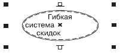
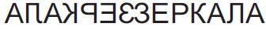
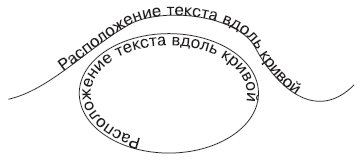
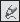
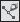
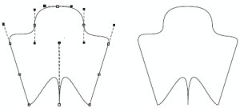
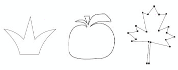
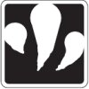

Номер учебного элемента
Учебный материал с указанием заданий
Рекомендации по выполнению заданий, оценка
УЭ – 0
Цель: изучить возможности работы с формой объектов в программе Corel Draw.
Внимательно прочитайте цель урока
УЭ – 1
Проверка изученного материала
Подготовка к работе.
I. Подготовьте ответы на следующие вопросы:
-
Какие два основных типа текста существуют в программе Corel Draw?
-
В чем особенности каждого из двух типов текста?
-
Что нужно сделать чтобы добавить текст внутрь фигуры?
-
Перечислите основные элементы форматирования текста.

II. Выполните задания:
-
Поместите текст внутрь эллипса:
 -
Сделайте зеркальное отображение надписи:
 -
Расположите текст вдоль кривых:

III. Оцените свои знания.
Критерии оценки.
-
"5" – 0 ошибок,
-
"4" – 1-2 ошибки,
-
"3" – 3 ошибки,
-
"2" – 4 и более ошибок.
Задание №1 оценивается 4-мя баллами
Выполнение каждого пункта из задания №2 оценивается в 1 балл
УЭ – 2
Изучение нового материала
Цель: получить представление об основах работы с инструментами изменения формы объектов в программе Corel Draw.
Задание: внимательно ознакомьтесь с теоретическим материалом учебника (лекции 5,6,9).
План:
-
Ознакомиться с основными принципами работы с инструментом Shape (Форма) (
 ).
). -
Ознакомиться с принципами работы инструментов Freehand (Кривая) () и Bezier (Кривая Безье) ().
-
Рассмотреть принципы действия инструментов «растрового» происхождения:
-
Knife (Лезвие) —
 ;
; -
Eraser (Ластик) —
 ;
; -
Smudge Brush (Пятно) —
 ;
; -
Roughen Brush (Огрубление) —
 .
.
-
Внимательно ознакомьтесь с материалом
УЭ – 3
Цель: самостоятельно изучить принципы работы с инструментами изменения формы объектов.
I. Ответьте на тестовые вопросы:
-
Что такое кривая Безье?:
-
это прямая или кривая линия, представляющая собой один цельный сегмент;
-
это любой незамкнутый контур;
-
это прямая или кривая линия, состоящая из сегментов и узлов, расположенных на их концах;
-
это любая линия.
-
-
С помощью какого инструмента выполняются действия над узлами и сегментами кривой Безье?:
-
Pick(Вид);
-
Shape(Форма);
-
Crop(Обрезка);
-
Outline(Контур).
-
-
Что нужно сделать с объектом перед началом работы над ним инструментом Shape(Форма)?:
-
преобразовать в кривые;
-
растрировать;
-
добавить узлы;
-
нажать кнопку Ctrl.
-
-
В чем отличие криволинейного сегмента от прямолинейного?:
-
может быть представлен только кривой линией;
-
каждый узел на его концах снабжен направляющими Безье;
-
имеет более двух узловых точек;
-
не имеет узловых точек.
-
-
Какого типа узла не существует?:
-
точка перегиба;
-
гладкий узел;
-
симметричный узел;
-
параллельный узел.
-
-
Зачем используют параметр Auto-Reduce On Erase (Автоматически упрощать при стирании) инструмента Eraser (Ластик):
-
для формирования контура с меньшим количеством узлов;
-
для автоматического определения стираемой области;
-
для преобразования объекта в кривую;
-
для изменения формы ластика.
-
II. Проверка правильности выполнения заданий.
Проверка правильности выполнения заданий. Оценка работы (каждый правильный ответ оценивается в 1 балл, если в ответе есть ошибки – 0 баллов). Проанализируйте ошибки.
Результат(в баллах):
За каждый правильный ответ – 1 балл
Результаты проверяет программа
УЭ – 4
Закрепление изученного материала.
Цель: выявить уровень усвоения нового материала.
Задание 1:
Описать основы работы и область применения инструментов изменения формы:
-
Shape (Лезвие) —
; -
Knife (Лезвие) —
; -
Eraser (Ластик) —
; -
Smudge Brush (Пятно) —
; -
Roughen Brush (Огрубление) —
.
Задание 2:
-
Преобразуйте пятиугольник в следующее изображение:
 -
Используя добавление новых узлов, преобразуйте эллипс в следующее изображение:

-
Используя кривые Безье, нарисуйте следующие фигуры:
 -
Используя инструмент Knife (Лезвие) (
) создайте логотип компании Юкос:
-
Используя инструмент Smudge Brush (Пятно) (
) создайте следующее изображение:

Оцените свою работу.
Критерии оценки:
-
1 ошибка – 5 баллов;
-
2-3 ошибки – 4 балла;
-
4-5 и более ошибок – 3 балла;
-
более 5 ошибок – 2 балла.
За правильное выполнение 1-го задания – 5 балл
За правильное выполнение каждой фигуры из задания 2 – 1 балл
УЭ – 5
Подведение итогов урока.
-
Прочитайте цели урока.
-
Достигли ли Вы цели урока? В какой степени?
-
Оцените свою работу.
Подсчитайте количество баллов, которое Вы набрали при выполнении заданий.
Поставьте себе оценку.
Индивидуально
Заполнить лист контроля